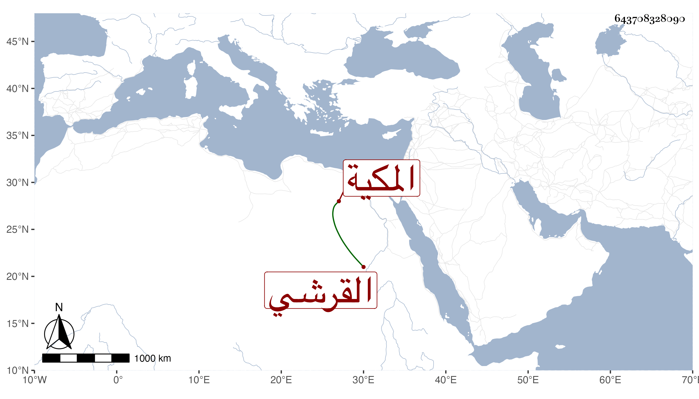

0902Sakhawi.DawLamic.ITO20230111-ara1.EIS1600.643708328090
Biography ID: 643708328090
145
خديجة ابنة أبي بكر بن عبد الله بن ظهيرة بن أحمد بن عطية بن ظهيرة القرشي المكية ؛ أمها حسان ابنة راجح بن حسان الكناني من حلي يعقوب . أجاز لها أبوها وفي سنة خمس ابن صديق والزين المراغي والعراقي والهيثمي والفرسيسي وعائشة ابنة ابن عبد الهادي وخلق ، وتزوجها قريبها عبد الكريم بن علي بن عبد الكريم بن أحمد بن عطية بن ظهيرة فولدت له فاطمة ، ثم تزوجها الجمال محمد بن أبي بكر بن علي بن يوسف فولدت له أبا البركات محمدا مات شابا ، ثم تزوجها عمر بن النشتبري فولدت له علماء . وماتت ...
